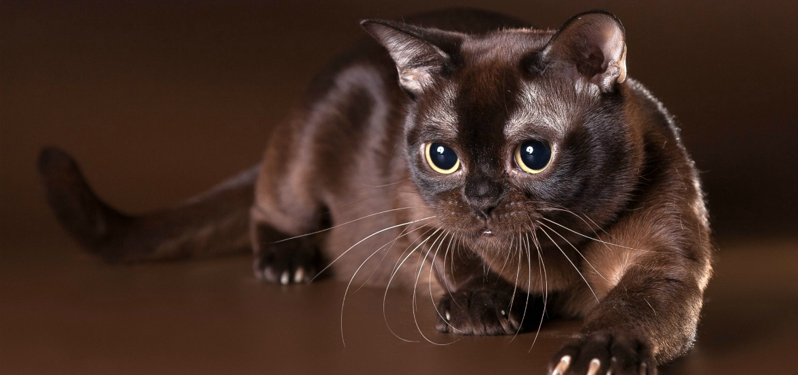

Бурма (порода кошек)
Бурма, или бурманская короткошёрстная кошка
Бурманская короткошёрстная кошка - порода короткошёрстных кошек. Кошку бурманской породы отличает мускулистое, крепкое тело, короткая блестящая шерсть, большие округлые глаза жёлтого цвета. Бурмы ласковы, игривы, привязаны к человеку, терпимы к соседству с другими кошками, а также с собаками.
Существует два основных типа бурманских кошек:
- европейский
- американский
У американского типа признается больше вариаций окрасов, внешне кошки имеют более округлую морду, тип телосложения приближен к американской короткошерстной кошке. У бурмы европейского типа окрасов,соответственно, меньше, шерсть более тонкая, кошки в сиамо-ориентальном типе, более легкие и обладающие более узкой мордой.
Интересные факты
- В 1970 году в Великобритании кошка породы бурма родила рекордное количество котят - 19. Из помета выжило 15 котят, среди которых была одна кошка, а все остальные коты.
- Выразительные золотистые глаза бурмы имеют интересную особенность - они меняют цвет в зависимости от источника света и интенсивности освещения
- У себя на родине в Бирме предки этих кошек считались реинкарнацией душ монахов и являлись почетными жителями храмов.
- Кошки, похожие на современную бурму, впервые упоминаются в Европе в "Книге стихов о кошках", то есть появились между 1350 и 1767 годами.